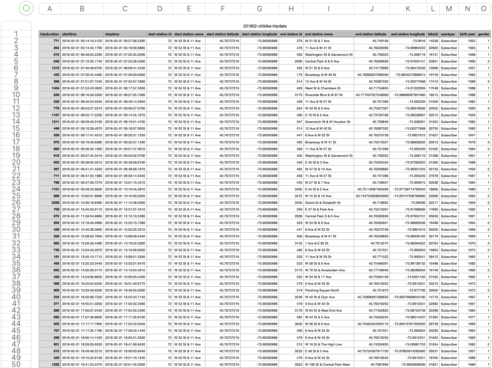

About this project
The purpose of this project is to showcase my skills and knowledge in Tableau Data Visualization
Scenario
In this project, you will learn the basics of using Tableau, which is one of the most popular business intelligence tools out there, and you will learn how to use Tableau to visualize the popular citibike trips data-set.
You will learn how to import data, understand measures and dimensions, understand work-spaces, use filters, use sheets, and create and export dashboards.
Tableau Dashboard - NYC Citi Bike Trips
Tableau Public Profile & Dashboard Link
My Tableau Public Profile Link
https://public.tableau.com/app/profile/kien.chung
NYC Citi Bike Trips Dashboard Link
https://public.tableau.com/app/profile/kien.chung/viz/NYCCitiBikeTrips_16768696194370/Feb2023Tasks
- Import the Citibike Trips Data.
- Plot 6 most popular Start Stations and End Stations.
- Visualize the distribution of number of trip starts / stops for each hour of the day.
- Create bar graph to show Average Trip dDuration of Customer and Subscriber by Gender.
- Display the Distribution of Common End Stations on Popular Start Stations.
- Create a final dashboard consists of 6 visualizations.
Snapshot of dataset
1 - 50 of 843,114 records
Dataset Information & Download
Total of 843,114 trip records in February, 2018
CSV file - 160 MB
[Download zip file via Github LFS here]